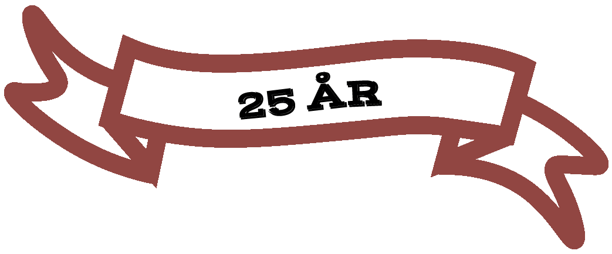

Denne ide gik han videre med og besluttede os for, at det var oplagt at skabe en "fast casual" take-away resturant

Vi fejrer 25 år på det danske marked med Chicago Roasthouse.
Da vi åbnede var take-away mulighederne ikke alverdens og derfor mente vi, at der manglede noget på markedet. Det viste sig at være en god beslutning og flere havde samme mening med en mangel af kvalitet på det danske take-away marked.
25 år senere har vi nu flere afdelinger i Danmark og tilbyder luksus mad til afhentning eller levering.
”Det smarte ved stege er, at de skal ligge og træk. Og jo længere de trækker, jo bedre bliver de faktisk”.
Vi bryder os ikke om udtrykket ”fast food” og foretrækker derfor, at kalde det ”fast casual”.